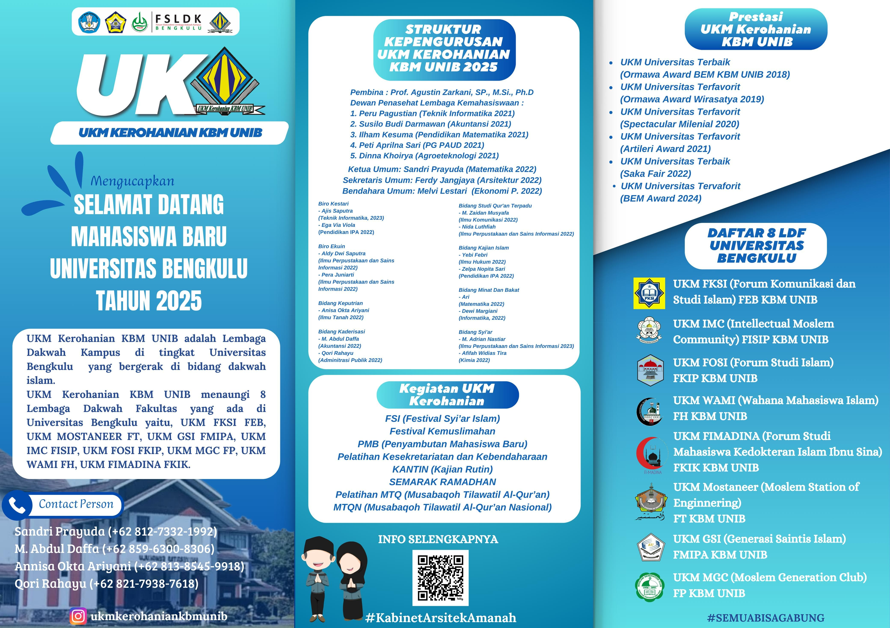

UKM KEROHANIAN
LEMBAGA DAKWAH KAMPUS
KEROHANIAN UNIB mengacu pada kegiatan kerohanian yang diselenggarakan di Universitas Bengkulu. Ini mencakup berbagai kegiatan keagamaan, pembinaan, dan pelatihan yang bertujuan untuk membina mahasiswa dalam hal spiritualitas dan keagamaan. Kegiatan ini bisa berupa pengajian, pelatihan kepemimpinan, atau kegiatan lain yang berkaitan dengan pembinaan mental dan spiritual mahasiswa
📸
Kutipan Inspirasi
“Sesungguhnya Allah tidak akan mengubah keadaan suatu kaum sehingga mereka mengubah keadaan yang ada pada diri mereka sendiri.”
(QS. Ar-Ra’d: 11)